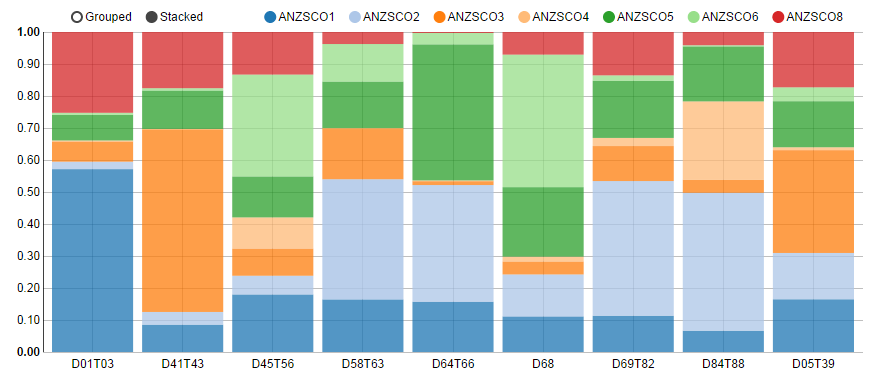
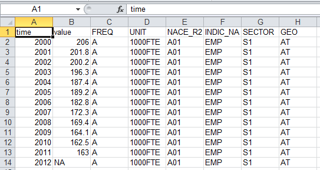

+
- access speed
- routine operations
- reproducibility
- available methods
- flexibility of presentation
- user empowerment
-
- development time
- changing requirements
- maintenance
- transparency

Bo Werth
Statistician STI/EAS

Shiny comes in two parts:

Shiny apps have two components:
a user-interface script
The user-interface script ui.R controls the layout and appearance of your app. It contains:
inputs into the application, e.g. selectInput, sliderInput, numericInputoutputs, e.g. text boxes, tables and plot sizea server script
The server-side script server.R contains the instructions that are required to build the application. It can:
outputs that are returned to the user interfaceThe simplest structure of a reactive program involves just a source and an endpoint:

source
the source typically is user input through a browser interface (item selection, type text string, button click etc.). These actions will set values that are reactive sources. Reactive sources can signal objects downstream that they need to re-execute.
endpoint
reactive endpoints are accessible through the output object (in most cases). A reactive endpoint is usually something that appears in the user's browser window, such as a plot or a table of values. Reactive endpoints can be told to re-execute by the reactive environment, and can request upstream objects to execute.
replication of tableau visualisation Percentage of employed who are senior managers, by sex
polycharts binding
## ui.R
selectInput(inputId = "country")
## server.R
output$chart2 <- renderChart({
data.country = subset(dat2m, country == input$country)
p2 <- rPlot(value ~ year, color = 'gender', type = 'line', data = data.country)
return(p2)
})
The amount of computation can be reduced by adding a reactive expression in between the source and endpoints:

Reactive expressions are placed somewhere in between sources and endpoints on the reactive graph. They are typically used for encapsulating slow operations. Try to prevent unnecessary work, especially if the app needs to do a lot of slow computation.
simple histogram with slider to change the binwidth
seq to create histogram breaks
## ui.R
sliderInput("bins", "Number of bins:", min = 1, max = 50, value = 30)
plotOutput("distPlot")
## server.R
bins <- reactive({
seq(min(x), max(x), length.out = input$bins + 1)
})
output$distPlot <- renderPlot({
hist(x, breaks = bins(), col = 'darkgray', border = 'white')
})
Reactive Evaluation
When you change “Number of bins", input$bins will change and renderPlot will re-execute.
renderPlot will call bins()bins will check that the bins widget has changedbins will return its new valuerenderPlot will re-draw the chart with the correct number of bins.A range of default controls are available:

k-means clustering, "X" marking the center of the cluster, points coloured according to clusters
kmeans
## ui.R
selectInput('xcol', 'X Variable', names(iris)),
selectInput('ycol', 'Y Variable', names(iris), selected=names(iris)[2]),
numericInput('clusters', 'Cluster count', 3)
## server.R
selectedData <- reactive({ iris[, c(input$xcol, input$ycol)] })
clusters <- reactive({ kmeans(selectedData(), input$clusters) })
output$plot1 <- renderPlot({
par(mar = c(5.1, 4.1, 0, 2.1))
plot(selectedData(), col=clusters()$cluster)
points(clusters()$centers, pch=4, ces=2)
})
Reactive Evaluation
When you change “Cluster count", input$clusters will change and renderPlot will re-execute.
renderPlot will call clusters()clusters will check that the clusters widget has changedclusters will return its new valuerenderPlot will re-draw the chart with the correct number of clusters.Each entry to output should contain the output of one of Shiny’s render* functions
js)js)The expression can be a simple statment or a complicated function call. It will re-run the expression everytime an upstream object changes. The expression must return an object (text, plot etc.) that is supported by the respective render* function.

## renderPlot
barplot(data.plot$value,
beside = TRUE,
names = data.plot$names, las = 2, cex.names = .8,
ylab = unit.string,
col = "#4F81BD")
par(op)
mtext(title.string, line = 2, font = 2, cex = 1.2)
op <- par(usr=c(0,0.1,0,1.05), xpd=NA)
legend(0, 1.1, legend=data.sort, cex=0.8, box.col = NA, horiz = TRUE)
## renderPrint
blurb.string <- paste0(
as.character(blurb$couS), ' ', tolower(blurb$coef), ', in source industry, \n',
'generated by ', blurb$couD, ' ', tolower(blurb$demand), ' of \n',
blurb$couX1, ' exports of ', blurb$indX, ', \n',
blurb$year, '.')
blurb.string.template <- paste0('<couS><coef>, in source industry,\n',
'generated by <couD><demand> of \n',
'<couX> exports of <indX>, \n',
'<year>.')
## renderPlot
x <- data.conv1
x <- x[, rev(seq_len(ncol(x)))]
xLabels <- rownames(x)
yLabels <- colnames(x)
i <- image(1:length(xLabels), 1:length(yLabels), x,
col = c("white", "green"),
xlab = "Export Country + Demand or Final Expenditure Industry (couX + indX)",
ylab = "Demand Country (couD)",
axes = FALSE)
return(i)






IPYE = VALK / EMPN / (VALK_2005 / EMPN_2005)[^a-zA-Z0-9]subset(data,var%in%c("VALU","EMPN","VALK"))VALU|EMPN|VALK|VALU_2005|EMPN_2005|VALK_2005IPYE according to formula
data.couX.indX <- data.conv1 * data.demand
aaa <- xB %*% data.couX.indX
aaa <- apply(aaa, 1, sum)


Perform various tasks on the same dataset
“There are only two hard things in Computer Science: cache invalidation and naming things.” Phil Karlton
Requires systematic structure:
## radiant.R
statPanel <- function(fun_name, rfun_label, fun_label, fun_tabs) {
sum_name <- paste0("summary_", fun_label)
plot_name <- paste0("plots_", fun_label)
output[[sum_name]] <- renderPrint({
result <- get(rfun_label)()
get(sum_name)()
})
output[[plot_name]] <- renderPlot({
result <- get(rfun_label)()
get(plot_name)()
})
string.tabPanel <- paste0('tabPanel("Plots", plotOutput(plot_name, height = "100%"),\n',
'verbatimTextOutput(sum_name))')
string.tabsetPanel <- paste0(string.tabsetPanel, string.tabPanel, sep = ',\n')
return(eval(parse(text=paste0('tabsetPanel(id="tabs_',fun_label,'",\n',string.tabsetPanel,')'))))}


rmd_example <- "## Sample report in Markdown
This is an example report in markdown. You can embed R code to be executed.
'''{r}
rnorm(5)
x <- 14*3
'''
### Inline code
Inline R code, e.g., the value of x is 'r x'.
### Math
LaTeX math: $f(\\\\alpha, \\\\beta) \\\\propto x^{\\\\alpha-1}(1-x)^{\\\\beta-1}$.
### Figures
'''{r}
hist(rnorm(100))
'''
"
## Radiant report UI
output$report <- renderUI({
div(class="row-fluid",
div(class="span6",
aceEditor("rmd_report", mode="markdown", value=state_init("rmd_report",rmd_example)),
## vimKeyBinding=vimKeyBinding),
actionButton("evalRmd", "Update"),
downloadButton('saveHTML', 'Save HTML'),
downloadButton('saveRmd', 'Save Rmd'), tags$br(), tags$br(),
fileInput('loadRmd', 'Load Rmd', multiple=TRUE)),
div(class="span6",
htmlOutput("rmd_knitDoc"))
)
})
## Radiant report functions
output$rmd_knitDoc <- renderUI({
if(is.null(input$evalRmd) || input$evalRmd == 0) return()
isolate({
if(running_local && input$rmd_report != "") {
return(HTML(paste(knit2html(text = input$rmd_report, fragment.only = TRUE, quiet = TRUE),
'<script>', 'MathJax.Hub.Typeset();', '</script>',
sep = '\n')))
}})
})
output$saveHTML <- downloadHandler(
filename = function() {"report.html"},
content = function(file) {
isolate({
html <- knit2html(text = input$rmd_report, quiet = TRUE,
options=c("mathjax", "base64_images"))
cat(html, file = file, sep = '\n')
})})
.png)

## Provider
output$uisB_provider <- renderUI({
ui.sdmxbrowser_provider <- getProviders()
selectInput("sdmxbrowser_provider", "Provider:", ui.sdmxbrowser_provider,
selected = state_init_list("sdmxbrowser_provider","EUROSTAT", ui.sdmxbrowser_provider),
multiple = FALSE)
})
## Flow
sdmxbrowser_provider <- input$sdmxbrowser_provider
if (input$sdmxbrowser_flow_updateButton != 0) {
load("data/data_init/sdmxBrowser.rda")
}
ui.sdmxbrowser_flow <- ui.sdmxBrowser.flows.list[[sdmxbrowser_provider]]
selectInput("sdmxbrowser_flow", "Flow:", c("", ui.sdmxbrowser_flow),
selected = "", multiple = FALSE)
## Dimensions
.sdmxbrowser_dimensions_all <- reactive({
sdmxbrowser_dimensions_all<- names(getDimensions(input$sdmxbrowser_provider,
input$sdmxbrowser_flow))
return(sdmxbrowser_dimensions_all)
})
output$uisB_dimensions <- renderUI({
if (input$sdmxbrowser_flow=="") return()
sdmxbrowser_dimensions_all <- .sdmxbrowser_dimensions_all()
selectInput("sdmxbrowser_dimensions", "Filter Dimensions:", sdmxbrowser_dimensions_all,
selected = sdmxbrowser_dimensions_all,
multiple = TRUE, selectize = FALSE)
})
## Dimension Codes
.sdmxbrowser_dimensioncodes <- reactive({
sdmxbrowser_dimensions <- input$sdmxbrowser_dimensions
sdmxbrowser_dimensioncodes <- as.list(sdmxbrowser_dimensions)
sdmxbrowser_dimensioncodes <- sapply(sdmxbrowser_dimensioncodes,function(x) NULL)
names(sdmxbrowser_dimensioncodes) <- sdmxbrowser_dimensions
return(sdmxbrowser_dimensioncodes)
})
output$uisB_dimensioncodes <- renderUI({
for (d in seq(along = sdmxbrowser_dimensions)) {
command <- paste0('selectInput("sdmxbrowser_dimensioncodes_', d,
'", "Select ', sdmxbrowser_dimensions[d],
':", c("',
gsub(', ', '", "', toString(sdmxbrowser_dimensioncodes[[d]])),
'"), selected = "', sdmxbrowser_dimensioncodes[[d]][1],
'", multiple = TRUE, selectize = TRUE)')
}
command.all <- paste(command.all, command, sep = ",")
})

RStudio server: shinyapps.io
Self-hosting on cloud server:
Shiny Tutorial:
Google Group:
Online Courses: